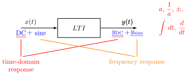
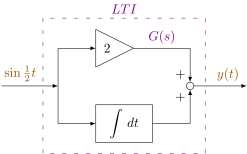
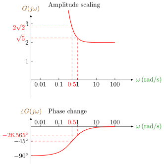
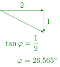
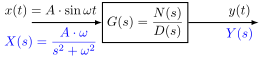
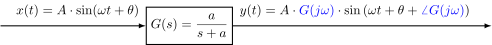
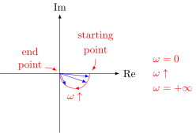
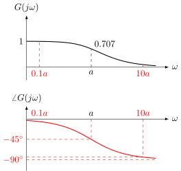

5 Frequency Response

E.g.

\[\begin{align*} y(t) &= 2 \cdot \sin\frac{1}{2}t + \int\sin\frac{1}{2}t\,dt \\ &= 2 \cdot \sin\frac{1}{2}t - 2 \cdot \cos\frac{1}{2}t \\ &= \sqrt{2^2+2^2} \cdot \sin\left(\frac{1}{2}t - 45^\circ\right) \end{align*}\]
\[\begin{align*} \color{green} \sin't \,&\color{green}= \cos t \\ \color{green}\cos't \,&\color{green}= -\sin t \\ \color{green}\sin(\alpha+\beta) \,&\color{green}= \sin\alpha \cdot \cos\beta + \sin\beta \cdot \cos\alpha \\ \color{green}\cos(\alpha+\beta) \,&\color{green}= \cos\alpha \cdot \cos\beta - \sin\alpha \cdot \sin\beta \\[2ex] & \color{red} \sin\frac{1}{2}t \cdot \cos 45^\circ - \cos\frac{1}{2}t \cdot \sin 45^\circ \end{align*}\]
\[ y(t) = \color{red}\underset{\text{amplitude}}{\underset{\text{change in}}{\underbrace{\color{black}2\sqrt{2}}}} \color{black} \cdot \sin\Big(\color{blue}\underset{\text{frequency}}{\underset{\text{same}}{\underline{\underline{\color{black}\frac{1}{2}t}}}} \color{red}\underset{\text{phase angle}}{\underset{\text{change in}}{\underbrace{\color{black} - 45^\circ}}} \color{black} \Big)\]

When \(x(t) = \sin t\),
\[\begin{align*} y(t) &= 2\sin t + \int \sin t \,dt \\ &= 2\sin t - \cos t \\ &= \sqrt{5} \cdot \sin(t-\varphi) \end{align*}\]

T.F.: \(\color{purple} G(s) = 2 + \displaystyle\frac{1}{s}\)
For frequency response, we will let \(s=j\omega\).
\[ G(j\omega) = 2 + \frac{1}{j\omega} = 2 - \frac{1}{\omega} \cdot j \]
When \(\omega=\displaystyle\frac{1}{2}\, \mathrm{rad/s}\),
\[ G(j\omega) = 2-2j, \quad \begin{cases} \lvert G(j\omega) \rvert = 2\sqrt{2} \\ \angle G(j\omega) = -45^\circ\end{cases} \]
When \(\omega=1\, \mathrm{rad/s}\),
\[ G(j\omega) = 2-j, \quad \begin{cases} \lvert G(j\omega) \rvert = \sqrt{5} \\ \angle G(j\omega) = -26.565^\circ\end{cases} \]
Why the amplitude scaling is \(\lvert G(j\omega) \rvert\) and the phase change is \(\angle G(j\omega)\) ?

\[\begin{align*} Y(s) &= X(s) \cdot G(s) \\ &= \frac{A \cdot \omega}{s^2+\omega^2} \cdot \frac{N(s)}{(s+p_1)(s+p_2) \cdots (s+p_n)} \\ &= \frac{c_1}{s-j\omega} + \frac{c_2}{s+j\omega} + \frac{k_1}{s+p_1} + \frac{k_2}{s+p_2} + \cdots + \frac{k_n}{s+p_n} \\ \mathcal{L}^{-1}\{Y(s)\} = y(t) &= \color{red}\underbrace{\color{black}c_1 \cdot e^{j\omega t} + c_2 \cdot e^{-j\omega t}} \color{black} + k_1 \cdot e^{-p_1 t} + e^{-p_2 t} + \cdots + k_n \cdot e^{-p_n t} \end{align*}\]
If the LTI system is stable, \[y(t \to \infty) = \color{red}\underline{\underline{\color{black}c_1}} \color{black} \cdot e^{j\omega t} + \color{red}\underline{\underline{\color{black}c_2}} \color{black} \cdot e^{-j\omega t}\]
\[ A \cdot \omega \cdot N(s) = c_1 \cdot (s+j\omega) \cdot D(s) + c_2 \cdot (s-j\omega) \cdot D(s) + k_1 \cdot \frac{(s^2+\omega^2) D(s)}{s+p_1} + \cdots + k_n \cdot \frac{(s^2+\omega^2) D(s)}{s+p_n} .\]
Assume \(s=+j\omega\), \(A \cdot \omega \cdot N(j\omega) = 2 \cdot j\omega \cdot c_1 \cdot D(j\omega)\)
\[c_1 = \frac{A \cdot \omega \cdot N(j\omega)}{2j\omega \cdot D(j\omega)} = \frac{A}{2j} \cdot G(j\omega) .\]
5.1 Why the amplitede scaling is …
\[y(t \to \infty) = \color{red}\underline{\underline{\color{black}c_1}} \color{black} \cdot e^{j\omega t} + \color{red}\underline{\underline{\color{black}c_2}} \color{black} \cdot e^{-j\omega t}\]
\[\begin{align*} &\, \frac{A \cdot \omega}{s^2+\omega^2} \cdot \frac{N(s)}{(s+p_1)(s+p_2) \cdots (s+p_n) \color{red}{=: D(s)}} \\ =&\, \frac{c_1}{s-j\omega} + \frac{c_2}{s+j\omega} + \frac{k_1}{s+p_1} + \frac{k_2}{s+p_2} + \cdots + \frac{k_n}{s+p_n} \end{align*}\]
Multiply both sides with \((s^2+\omega^2) D(s)\):
\[ A \cdot \omega \cdot N(s) = c_1 \cdot (s+j\omega) \cdot D(s) + c_2 \cdot (s-j\omega) \cdot D(s) + k_1 \cdot \frac{(s^2+\omega^2) D(s)}{s+p_1} + \cdots + k_n \cdot \frac{(s^2+\omega^2) D(s)}{s+p_n} \]
Assume \(s=+j\omega\quad \implies \quad c_1 = \displaystyle \frac{A}{2j} \cdot G(j\omega)\).
Assume \(s=-j\omega\),
\[A \cdot \omega \cdot N(-j\omega) = -2j\omega \cdot c_2 \cdot D(-j\omega)\]
\[c_2 = \frac{A \cdot \omega \cdot D(-j\omega)}{-2j\omega \cdot D(-j\omega)} = -\frac{A}{2j} \cdot G(-j\omega)\]
Therefore,
\[y(t\to\infty) = \frac{A}{2j} \cdot G(j\omega) \cdot e^{j\omega t} - \frac{A}{2j} \cdot G(-j\omega) \cdot e^{-j\omega t} .\]
If \(F(\omega) = a + i \cdot b\), then
\[\begin{align*} F(\omega) &= \int_{-\infty}^{+\infty} \left[f(t) \cdot \cos \omega t + j \cdot f(t) \cdot \sin \omega t\right] \,dt \\ &= \int_{-\infty}^{+\infty} f(t) \cdot e^{j\omega t} \,dt \\ \color{YellowOrange}\mathrm{Then} \quad F(-\omega) \,&\color{YellowOrange}= \int_{-\infty}^{+\infty} \Bigg[\color{red}\underset{a}{\underbrace{\color{YellowOrange} f(t) \cdot \cos \omega t}} \color{YellowOrange} - \color{red}\underset{b}{\underbrace{\color{YellowOrange}j \cdot f(t) \cdot \sin \omega t}} \color{YellowOrange}\Bigg] \,dt \\ &= a - i \cdot b \end{align*}\]
\[\begin{align*} y(t\to\infty) &= \frac{A}{2j} \cdot \lvert G(j\omega) \rvert \cdot e^{j\varphi} \cdot e^{j\omega t} - \frac{A}{2j} \cdot \lvert G(j\omega) \rvert \cdot e^{-j\varphi} \cdot e^{-j\omega t} \\ &= A \cdot \lvert G(j\omega) \rvert \cdot \frac{e^{j\omega t + j\varphi} - e^{-(j\omega t + j\varphi)}}{2j} \\ &= A \cdot \color{blue}\underset{\text{scaling}}{\underset{\text{Amplitude}}{\underbrace{\color{black} \lvert G(j\omega) \rvert}}} \color{black} \cdot \sin(\omega t + \color{blue}\underset{\varphi=\angle G(j\omega)}{\underbrace{\color{black}\varphi}} \color{black} ) \end{align*}\]
5.2 Frequency response of 1st-order system

\[\begin{align*} G(j\omega) &= \frac{a}{a+j\omega} \\ &= \frac{a(a-j\omega)}{a^2+\omega^2} \\ &= \frac{a}{a^2+\omega^2} + \frac{-j\omega a}{a^2+\omega^2} \\ &= \frac{1}{1 + \left(\frac{\omega}{a}\right)^2} + j \cdot \frac{-\omega/a}{1+\left(\frac{\omega}{a}\right)^2} \end{align*}\]
\(\boxed{\textbf{Polar Plot}}\)

\[G(j\omega) \to \text{polar plot}\]
- Hard to see the effect of individual poles/zeros. (Root Locus)
- Indirect information of \(\lvert G(j\omega) \rvert\) and \(\angle G(j\omega)\). (Bode Plot)
\[\lvert G(j\omega) \rvert = \sqrt{\frac{1}{\left(1+\frac{\omega^2}{a^2}\right)^2} + \frac{\omega^2/a^2}{\left(1+\frac{\omega^2}{a^2}\right)}} = \boxed{\frac{1}{\sqrt{1+\frac{\omega^2}{a^2}}}}\]
\[\angle G(j\omega) = \boxed{\arctan \left(-\frac{\omega}{a}\right)}\]

5.3 Bode Plot
\[\begin{align*} G(s) &= k_1 \cdot \frac{(s+z_1)(s+z_2) \cdots (s+z_m)}{(s+p_1)(s+p_2) \cdots (s+p_n)} \qquad \color{red} m < n \\ \color{YellowOrange} G(j\omega) \,&\color{YellowOrange}= k_1 \cdot \frac{(z_1+j\omega)(z_2+j\omega) \cdots (z_m+j\omega)}{(p_1+j\omega)(p_2+j\omega) \cdots (p_n+j\omega)} \\ \color{YellowOrange} \lvert G(j\omega) \rvert \,&\color{YellowOrange}= \lvert k_1 \rvert \cdot \frac{\lvert z_1+j\omega\rvert \cdot \lvert z_2+j\omega \rvert \cdots \lvert z_m+j\omega\rvert}{\lvert p_1+j\omega\rvert \cdot \lvert p_2+j\omega\rvert \cdots \lvert p_n+j\omega\rvert} \\ \color{YellowOrange} \angle G(j\omega) \,&\color{YellowOrange}= \angle k_1 + \angle \varphi_{z_1} + \angle \varphi_{z_2} + \cdots + \angle \varphi_{z_m} \\ &\color{YellowOrange} \qquad\quad - \angle \varphi_{p_1} - \angle \varphi_{p_2} - \cdots - \angle \varphi_{p_n} \end{align*}\]
Side note \[\begin{align*} G_1(j\omega) &= a + bi = r_1 \cdot e^{i\theta_1} \\ G_2(j\omega) &= r_2 \cdot e^{i\theta_2} \\ G_1(j\omega) \cdot G_2(j\omega) &= r_1 \cdot r_2 \cdot e^{i(\theta_1+\theta_2)} \end{align*}\]
\[\begin{align*} \log \lvert G(j\omega) \rvert =&\, \log \lvert k_1 \rvert \cdot \frac{\lvert z_1+j\omega\rvert \cdot \lvert z_2+j\omega \rvert \cdots \lvert z_m+j\omega\rvert}{\lvert p_1+j\omega\rvert \cdot \lvert p_2+j\omega\rvert \cdots \lvert p_n+j\omega\rvert} \\ =&\, \log \lvert k_1 \rvert +\log\lvert z_1+j\omega\rvert +\log\lvert z_2+j\omega \rvert + \cdots +\log\lvert z_m+j\omega\rvert \\ & \qquad\quad -\log\lvert p_1+j\omega\rvert - \log\lvert p_2+j\omega\rvert - \dots - \log\lvert p_n+j\omega\rvert \end{align*}\]
\[\color{red}\lvert G(j\omega) \rvert = \lvert G_1(j\omega) \rvert \cdot \lvert G_2(j\omega) \rvert \cdot \lvert G_3(j\omega) \rvert\]